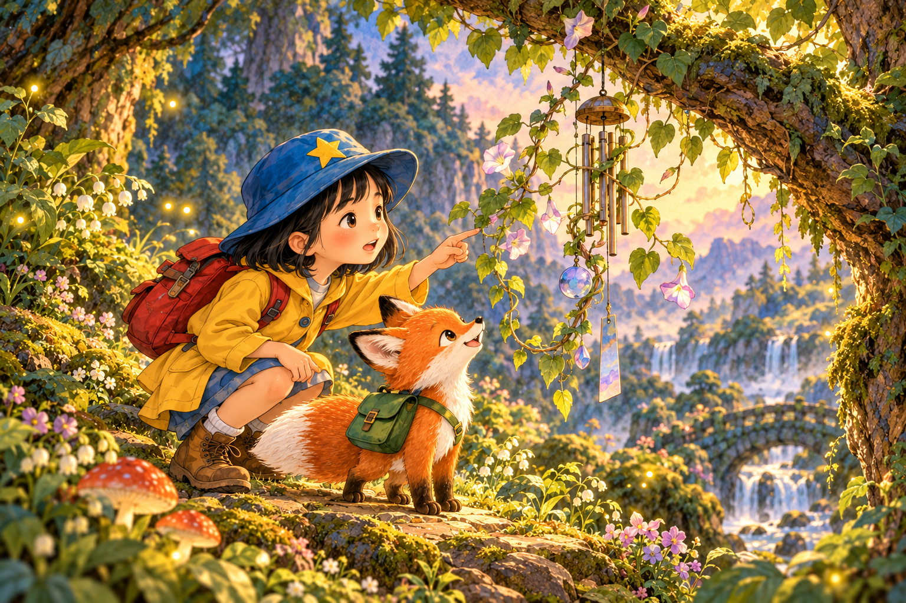
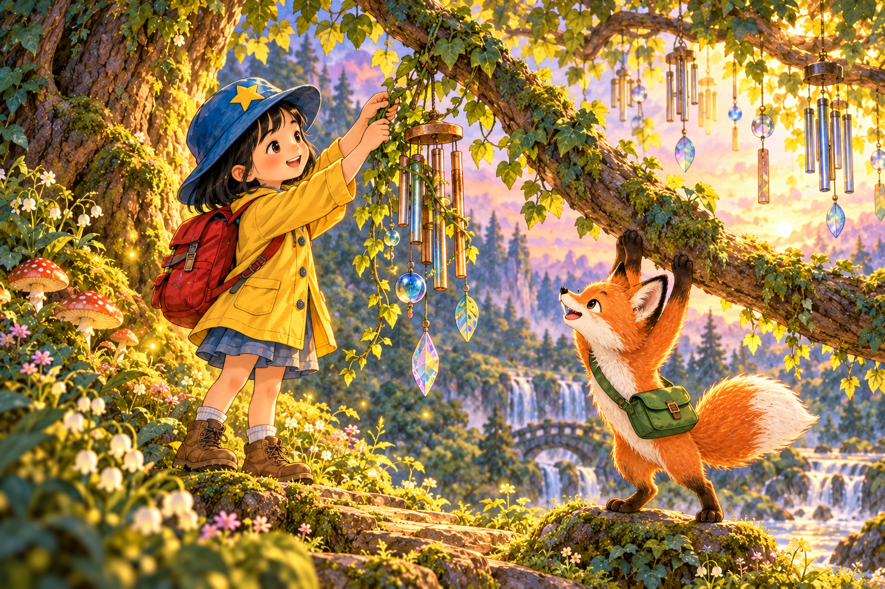
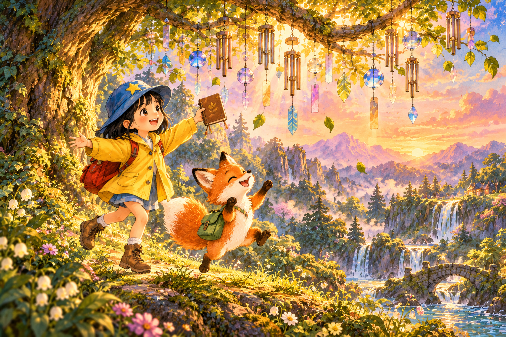

CHAPTER 01 · 好奇
萤光森林：相遇出发
在萤光森林，7岁的小月遇见了小狐狸栗栗。伙伴们邀请小月一起找回风铃树的歌声。
✦ 01 / 04

CHAPTER 02 · 期待
萤光森林：发现线索
小月和小狐狸栗栗仔细观察，发现一条细藤缠住了风铃。“这可能是重要的线索！”小月说。一路上，朋友们停下来倾听彼此的想法。
✦ 02 / 04

CHAPTER 03 · 专注
萤光森林：合作行动
大家决定扶住树枝，轻轻解开藤蔓。小狐狸栗栗陪在身边，小月一点一点地尝试。
✦ 03 / 04

CHAPTER 04 · 喜悦
萤光森林：庆祝归来
任务完成了！小狐狸栗栗感谢小月，朋友们高兴地庆祝。小月把这次经历记在小本子上。
✦ 04 / 04
愿每一次发现，都有朋友陪在身边。